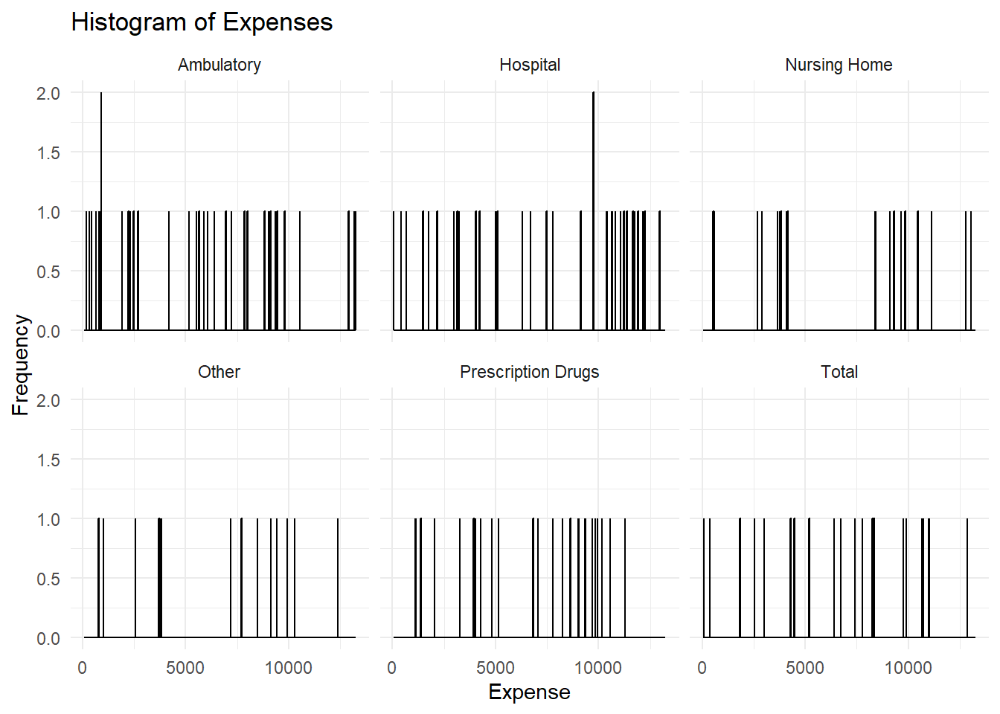
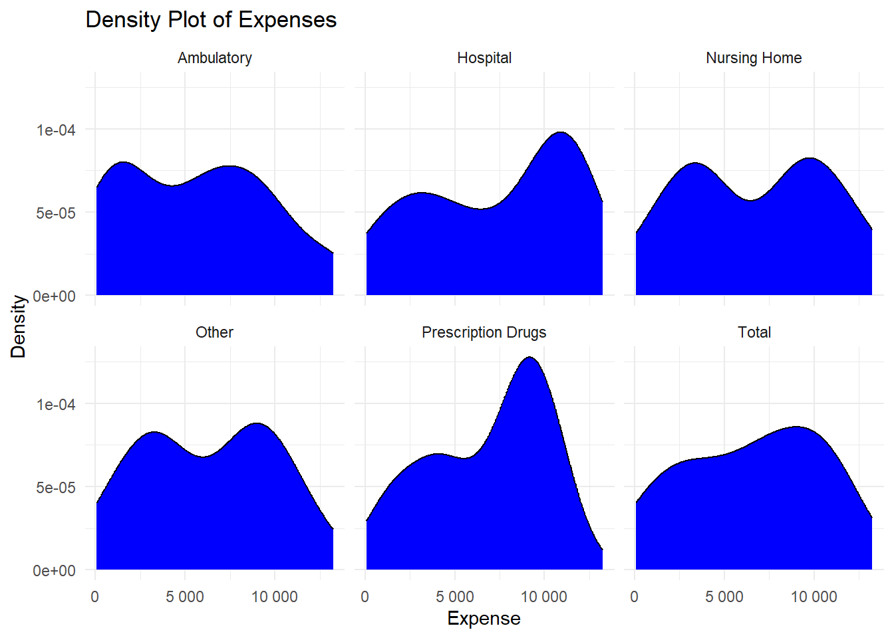

For this exercise, I’ll be using a dataset I got from the CDC website about smoking attributable expenses in the U.S. The data includes expenses per state for different categories such as hospital bills, ambulances, and prescriptions as well as overall expenses for the U.S. from 2005-2009. We’ll do an exploratory data analysis and some data processing for this exercise.
#load the datasetlibrary(here)
Warning: package 'here' was built under R version 4.3.2
here() starts at D:/MADA/kevinkosewick-MADA-portfolio
smoke_expense<-read.csv(here("cdcdata-exercise", "SAE.csv"))#make sure data fully loaded by checking number of rows and columns. We should have 19 variables and 1560 observationsnrow(smoke_expense)
[1] 1560
ncol(smoke_expense)
[1] 19
#check the structure and summary of the data. For the sake of the webpage, I've made the structure line an annotation, but if you're viewing this in R go ahead and delete the #summary(smoke_expense)
Year LocationAbbr LocationDesc DataSource
Min. :2005 Length:1560 Length:1560 Length:1560
1st Qu.:2006 Class :character Class :character Class :character
Median :2007 Mode :character Mode :character Mode :character
Mean :2007
3rd Qu.:2008
Max. :2009
TopicType TopicDesc MeasureDesc Variable
Length:1560 Length:1560 Length:1560 Length:1560
Class :character Class :character Class :character Class :character
Mode :character Mode :character Mode :character Mode :character
Data_Value_Unit Data_Value_Type Data_Value
Length:1560 Length:1560 Min. : 8.4
Class :character Class :character 1st Qu.: 105.7
Mode :character Mode :character Median : 306.1
Mean : 1545.2
3rd Qu.: 842.3
Max. :132459.8
Data_Value_Footnote_Symbol Data_Value_Footnote GeoLocation
Length:1560 Length:1560 Length:1560
Class :character Class :character Class :character
Mode :character Mode :character Mode :character
Topic.Type.ID Topic.ID Measure.ID SubMeasureID
Length:1560 Length:1560 Length:1560 Length:1560
Class :character Class :character Class :character Class :character
Mode :character Mode :character Mode :character Mode :character
DisplayOrder
Min. :1.0
1st Qu.:2.0
Median :3.5
Mean :3.5
3rd Qu.:5.0
Max. :6.0
#structure(smoke_expense)
We can see that there’s one observation for each of our 6 expense types per year. We can also see from the structure and summary that there are many columns that we don’t need for an analysis. We can go ahead and pick out the ones that are of interest to us: year, location, variable (which refers to the type of expense), and value (which is the cost in millions of dollars for each expense type). All of the other columns seem to be for record keeping purposes.
#make a new data frame containing only our four columns of interest: Year, LocationAbbr, Variable, and Data_Value.smoke_expense_2 <- smoke_expense[, c("Year", "LocationAbbr", "Variable", "Data_Value")]#check the new object to make sure it has everything we want. For the sake of the webpage, I've made the structure line an annotation, but if you're viewing this in R go ahead and delete the ##structure(smoke_expense_2)summary(smoke_expense_2)
Year LocationAbbr Variable Data_Value
Min. :2005 Length:1560 Length:1560 Min. : 8.4
1st Qu.:2006 Class :character Class :character 1st Qu.: 105.7
Median :2007 Mode :character Mode :character Median : 306.1
Mean :2007 Mean : 1545.2
3rd Qu.:2008 3rd Qu.: 842.3
Max. :2009 Max. :132459.8
This new object is much more condensed and easier to work with. We’ll check now to make sure there are no NA values and then proceed with some EDA.
#check for NA valuesna_check<-is.na(smoke_expense_2)print(sum(na_check))
[1] 0
Since there aren’t any NA values and looking at the structure indicates no missing values, we can begin to check the mean and standard deviation of each expense type across the 4 years in the data set. Rather than looking at all 50 states, let’s focus on 5 to make this a bit easier. We’ll use GA, TN, MS, CA, and FL.
Using Microsoft Copilot with GPT-4 in “Precise Mode”, I entered the following prompt to get the code I’m about to use: “For my exploratory analysis I want to summarize each variable in a way that can be described by a distribution. For instance, I want to be able to determine the mean and standard deviation of each expense type for 5 different states over the 4 year period recorded in the dataset. What is the best approach for this and could you provide some example code?”
# Load necessary librarieslibrary(dplyr)
Attaching package: 'dplyr'
The following objects are masked from 'package:stats':
filter, lag
The following objects are masked from 'package:base':
intersect, setdiff, setequal, union
# Filter for the 5 states you are interested instates <-c("TN", "MS", "GA", "FL", "CA")smoke_filtered <- smoke_expense_2 %>%filter(LocationAbbr %in% states)# Calculate mean and standard deviationsmoke_summary <- smoke_filtered %>%group_by(LocationAbbr, Year, Variable) %>%summarise(Mean =mean(Data_Value, na.rm =TRUE),SD =sd(Data_Value, na.rm =TRUE) )
`summarise()` has grouped output by 'LocationAbbr', 'Year'. You can override
using the `.groups` argument.
# Print the summary statisticsprint(smoke_summary)
# A tibble: 150 × 5
# Groups: LocationAbbr, Year [25]
LocationAbbr Year Variable Mean SD
<chr> <int> <chr> <dbl> <dbl>
1 CA 2005 Ambulatory 2057. NA
2 CA 2005 Hospital 5309. NA
3 CA 2005 Nursing Home 592. NA
4 CA 2005 Other 620. NA
5 CA 2005 Prescription Drugs 1883. NA
6 CA 2005 Total 10460. NA
7 CA 2006 Ambulatory 2122. NA
8 CA 2006 Hospital 5652. NA
9 CA 2006 Nursing Home 641. NA
10 CA 2006 Other 677. NA
# ℹ 140 more rows
This is good information, but since there’s only one observation for each expense category per year, we don’t learn much from a mean or standard deviation (SD) calculation. We can group each year together to get the mean and SD to allow for easier creation of synthetic data for the second part of this exercise.
# Calculate mean and standard deviation for all 5 states combinedsmoke_summary <- smoke_filtered %>%group_by(LocationAbbr, Variable) %>%summarise(Mean =mean(Data_Value, na.rm =TRUE),SD =sd(Data_Value, na.rm =TRUE) )
`summarise()` has grouped output by 'LocationAbbr'. You can override using the
`.groups` argument.
# Print the summary statisticsprint(smoke_summary)
# A tibble: 30 × 4
# Groups: LocationAbbr [5]
LocationAbbr Variable Mean SD
<chr> <chr> <dbl> <dbl>
1 CA Ambulatory 2294. 208.
2 CA Hospital 6006. 571.
3 CA Nursing Home 699. 87.9
4 CA Other 725. 76.8
5 CA Prescription Drugs 2172. 197.
6 CA Total 11896. 1131.
7 FL Ambulatory 1419. 105.
8 FL Hospital 3532. 270.
9 FL Nursing Home 595. 58.9
10 FL Other 514. 53.3
# ℹ 20 more rows
Now we can create some visualizations of this information for easier interpretation of the data. I entered the following prompt into Microsoft Copilot with GPT-4 in “Precise mode”: “I want to make plots now to determine if the distribution of this data is relatively normal. How would I go about that?”
I received this code string from it, with the only modifications I made being the proper column names and adjusting the binwidth to the square root of all of the observations:
# Load necessary librarieslibrary(ggplot2)
Warning: package 'ggplot2' was built under R version 4.3.3
# Create a histogramggplot(smoke_filtered, aes(x = Data_Value)) +geom_histogram(binwidth =12.25, fill ="blue", color ="black") +facet_wrap(~ Variable) +theme_minimal() +labs(title ="Histogram of Expenses", x ="Expense", y ="Frequency")
# Create a density plotggplot(smoke_filtered, aes(x = Data_Value)) +geom_density(fill ="blue") +facet_wrap(~ Variable) +theme_minimal() +labs(title ="Density Plot of Expenses", x ="Expense", y ="Density")
# Create a Q-Q plotlibrary(car)
Loading required package: carData
Attaching package: 'car'
The following object is masked from 'package:dplyr':
recode
qqPlot(smoke_filtered$Data_Value, distribution ="norm", main ="Q-Q Plot of Expenses")
[1] 131 45
The histogram isn’t very useful for much besides visualizing the numbers, but the Q-Q plot shows that the distribution for the data as a whole seems normal but contains some outliers to the left and the right. The density plots point out that “Other”, “Nursing Home”, and “Prescription Drugs”, and “Ambulatory” expenses are pretty skewed, but the other two are pretty normally distributed. Hopefully this is enough information to create a good synthetic data set that mimics the trends seen in this one!
This section was contributed by Emma Hardin-Parker
To make sure the synthetic data set was created properly, I am going to use the head(), glimpse(), and summary() functions to see if the first five rows look okay for further analyses.
Everything looks as it should, so it’s time to make some exploratory figures and tables.
# Calculate mean and standard deviation for all 5 states combinedsyn_smoke_summary <- syn_smoke %>%group_by(LocationAbbr, Variable) %>%summarise(Mean =mean(Data_Value, na.rm =TRUE),SD =sd(Data_Value, na.rm =TRUE) )
`summarise()` has grouped output by 'LocationAbbr'. You can override using the
`.groups` argument.
# Create a histogramsyn_hist <-ggplot(syn_smoke, aes(x = Data_Value)) +geom_histogram(binwidth =12.25, fill ="blue", color ="black") +facet_wrap(~ Variable) +theme_minimal() +labs(title ="Histogram of Expenses", x ="Expense", y ="Frequency")print(syn_hist)

# Create a density plotlibrary(scales)
Warning: package 'scales' was built under R version 4.3.2
syn_dens <-ggplot(syn_smoke, aes(x = Data_Value)) +geom_density(fill ="blue") +facet_wrap(~ Variable) +theme_minimal() +labs(title ="Density Plot of Expenses", x ="Expense", y ="Density") +scale_x_continuous(labels =label_number())print(syn_dens)

# Create a Q-Q plotlibrary(car)syn_qq <-qqPlot(syn_smoke$Data_Value, distribution ="norm", main ="Q-Q Plot of Expenses")
The histograms produced between the original data and the synthetic data were quite different. Most of the individual histograms per Variable created with the original data were skewed to the right, while the histograms produced with the synthetic data were evenly distributed throughout.
The density plots also look different between the original data and the synthetic data, however, I struggled to code this plot. For some reason, the density value on the y-axis used scientific notation and I had to add an additional line of code to remove it. Even with that transformation, the densities on average are higher in the synthetic plot than the original plot.
The q-q plot was undoubtedly the most interesting plot to compare to the original data. The synthetic q-q plot is significantly more normally distributed that the original plot. Though the histograms differed drastically, it is much easier to compare normality between the data sets using a q-q plot, so I am happy that I was able to successfully create this one.